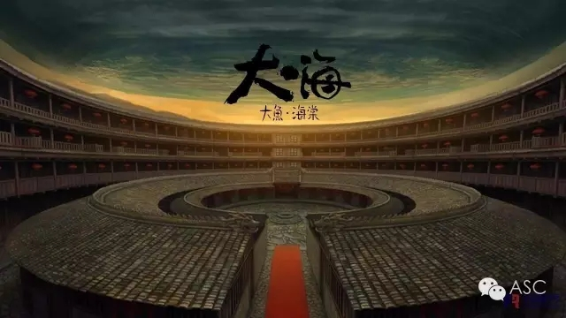
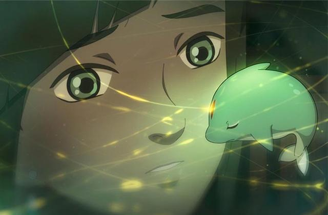
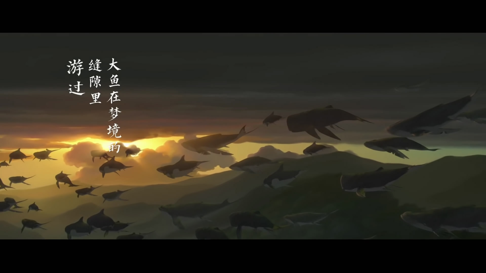
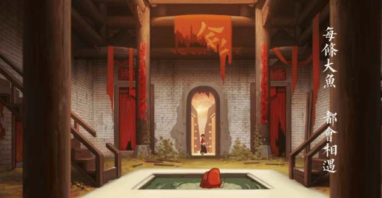

互惠动态
|
|
从《大鱼海棠》看“家庭教育”！
要问最近最火的国产动画片是哪部？恐怕非《大鱼海棠》莫属。

影片主要讲述了在十六岁生日那天，居住在“神之围楼”里的一个名叫椿的女孩变作一条海豚到人间巡礼，被大海中的一张网困住，一个人类男孩因为救她而落入深海死去。为了报恩，为了让人类男孩复活，她需要在自己的世界里，历经种种困难与阻碍，帮助死后男孩的灵魂——一条拇指那么大的小鱼，成长为一条比鲸更巨大的鱼并回归大海。

然而在你看到那满屏的中国风，那满满的想象力，那宏大的世界观......
你是否注意到这里面有三位长辈的形象，也代表了现实中很多的家长。
“捧在手上怕摔了，含在嘴里怕化了”的“妈管严”——凤
椿的母亲凤，她期望椿能像自己一样具有独当一面的能力，但当海天之门开启时，每一个年满十五岁的族人都要进入人类世界游历七天，椿的母亲对椿百般不舍依依惜别。当别人的父母都已经站在远处望着孩子远去时，椿的妈妈又足足嘱咐了半天各种的不放心，她是极度不放心孩子的母亲代表，也是典型的中国母亲形象的典型。
“一句话也不多说，就在背后默默看着默默支持”的“沉默派”——爸爸
椿的爸爸在电影里出现的并不多，但是却很真实的诠释了“缄默派”父母的形象。在凤即将通往海天之门的时候，爸爸的表现尤为淡定与平静，“能安全回来就好”大概是椿爸爸复杂内心最直接的表达。中国式的家庭教育中，这样不懂得如何与孩子沟通的父母其实有很多，或许您就是其中的一个代表。
“海阔凭鱼跃，天高任鸟飞”的“自由派”——爷爷
椿的爷爷掌管白草，医术高明，一生救人无数却救不了自己最爱的人也就是椿的奶奶。爷爷对椿说：“我们并不是神，我们为他们工作，真正的神在你心中。”爷爷的形象在《大鱼海棠》中是闪烁着神圣光芒的形象，椿所作的一切他都持支持和相信的态度，并坚定只要椿怀有一颗善良的心，无论做什么，爷爷都会支持。爷爷的形象是典型的慈爱和蔼的家长形象。

“你要记住，外面的世界很危险，千万不要让人类靠近你。”
这仿佛让小编听到的是：“你要听妈妈的话，只有我是对你最好的，我这么做都是 为了你好。”
“你还小，等你长大了就明白了。”
“我走的桥比你走的路都多，你要听取大人的经验。”
不管孩子有多大，不管孩子走得有多远，最放心不下的就是妈妈啦！吃的好不好，穿的暖不暖，都遇见了什么人，面面俱到，处处操心。对孩子，妈妈总是放心不下，想把孩子就这样捧在手心一辈子。
想要教育好孩子，要把握好何时该管，何时该放，何时管多放少，何时管少放多的教育之度。教孩子是父母的天职，养不教父母之过也。以这种思想为指导表现出的家教，就是从小到大事无俱细地包办孩子的许多事情。正是这种当“放”不放的教育，是很多孩子成为“温室里的花朵”，“太阳下的气球”。一旦花朵哪一天走出了温室，没有您给孩子塑造的保护壳，一点风吹雨打，就会凋零。
椿的妈妈凤即使在椿去往人类世界时依依不舍，难以放手,但她最终还是放开了手。“我的女儿终于要长大了”，在通往海天之门后终于可以独当一面了，和这个世界上所有的父母一样，纵然有万千不舍，但孩子的成长才是父母最大的幸福。
不做“沉默派”的家长。
大海说：“准时回来就好，别管我们了，快去吧。”
《大鱼海棠》里，一如既往不改诸多影片里父亲沉默寡言的个性特征，椿的爸爸从头到尾就真的只有两句台词。
第一句：
在妈妈凤千叮咛万嘱咐的嘱托椿一定要平安回来的情况下，
椿的爸爸隐忍着不舍就只说了一句“不会有事儿的”。
第二句：
在妈妈凤哭的梨花带雨紧紧抱着椿庆幸着自己的女儿要长大了的情况下，
椿的爸爸决绝的平静的说：“准时回来就好，别管我们了，快去吧。”
两句台词，让中教君很自然的想起了父亲的形象，和一个父亲在家庭教育中所担负的责任。
爸爸在家庭教育里有着至关重要的作用！
苏联著名教育学家阿莫纳什维利曾经说过“父亲在家里应当是有权威的人，他的威信越高，孩子对自己要求越严?孩子需要父亲，父亲应当是善良的、愉快的人，孩子小的时候，父亲常常忘记自己是大人，像淘气的孩子和孩子一起玩，孩子长大了，父亲是孩子的知心朋友和导师，即严格又正直，言行一致，成为孩子的榜样。”
爸爸是严肃的，权威的，遥不可及的，他们平时工作忙，没有时间陪伴孩子，从而导致和孩子沟通时会很生疏和尴尬；或者爸爸的性格不如妈妈那般温柔，少有言辞，时而沉默的形象更让孩子觉得不敢接近。
孩子的思考方式是简单而直接的，他们还没有长大，他们不能深刻的理解您深沉的爱，他们觉得爸爸不与其玩耍就是不喜欢他们，大多数孩子因为您爱的方式而产生“误会”。
沉默是金，但对于孩子而言，一个“和我玩”“听我说话”“偶尔对我撒娇”的爸爸才是最好，因为孩子最需要。爸爸的存在，要像36摄氏度的夏天里微风刚好吹来。
“自由派”的家长们，孩子的自由不是绝对的。
大海说：“只要你的心是善良的，对错是别人的事。”
《大鱼海棠》里，椿有一个掌管白草的长胡子爷爷,爷爷用自己的命救了湫的命，爷爷在临走前，这样对椿说：
“我知道你在做一件非常危险的事，所有人都会反对你，只要你的心是善良的，对错是别人的事，照着自己的心意走，爷爷会化成海棠树，和奶奶一起，永远支持你。”
此话一出，便引起了大家的广泛讨论，纵然椿是善良的，就可以不顾他人的感受，不管事情的对错了吗？
也对爷爷的教育方式产生了争论：家长到底应不应该无条件的支持孩子？相信孩子？满足孩子的需求？椿的情况是特殊的，但是真正的在家庭教育中，家长们又该如何去做呢？
当孩子还小，没有形成正确的价值观世界观时，家长们应该注意：一切以孩子的要求为中心，无原则无条件地满足孩子的愿望，使孩子的愿望不断地膨胀，结果孩子只知道自己的需要，不会顾及别人的感受，在家里“惟我独尊”而变成一个狂妄自大的人。
没有适当的规则和无限制的成长环境导致了孩子处处以自我为中心，在家庭教育中，父母要把握好孩子需要和给予之间的尺度，鼓励孩子通过恰当的方式争取自己所需，去实现自己的理想，这才是理智的父母应该做的。
而当孩子渐渐长大，有了自己的想法和主见时，父母的支持和相信真的很重要，你们要知道：养育孩子十几年，也教育孩子十几年了，他们已经学会了如何做更好的自己，走更正确的路，有更丰富的梦想，您要做的是相信和支持。孩子出航远行，您不必同行，默默祝福，做港湾里明亮的灯塔，照亮孩子回家的路，便好！

《大鱼海棠》里有这么一句台词：“不妨大胆一些，比如爱一个人，攀一座山，追一个梦。”
作为家长不妨大胆一些，爱您的孩子，让他去攀一座高山，追一个他想追的梦。
做一个大胆的妈妈，放孩子远行，让孩子有一双更坚硬的翅膀；
做一个大胆的爸爸，在孩子眼里站成一棵高大但不遥远的大树，让孩子和爸爸一样，长成一棵坚强的木棉；
做一个大胆的家长，不是说让孩子放任自流，而是让孩子像小小的鲲一样，遨游千里，激流勇进，幻化成最美的大鱼。

关于互惠，您了解得够多么？
请外国学生来家庭照顾孩子，辅导孩子外语？
只了解这些是不够的！
获取更多信息请参考以下方式：
联系ASC：
电话：86-21-61116069(上海中心）
86-25-66065662（南京中心）
手机：15601666586（可加微信）
Q Q：3259637585
微信：asc-center
邮箱：info@asc-center.com
网站：www.asc-aupair.com

感谢您对我们的关注